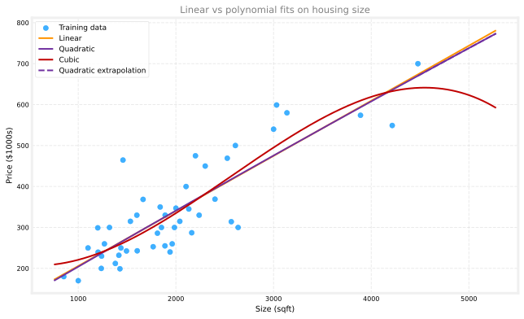
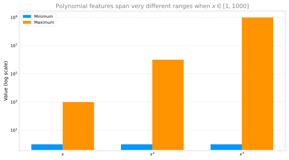
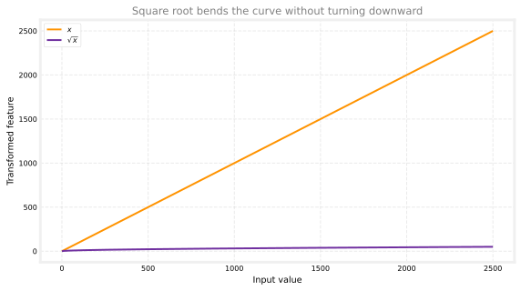
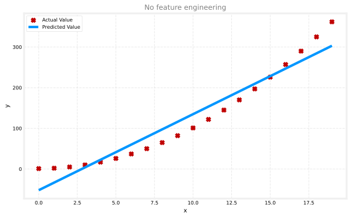
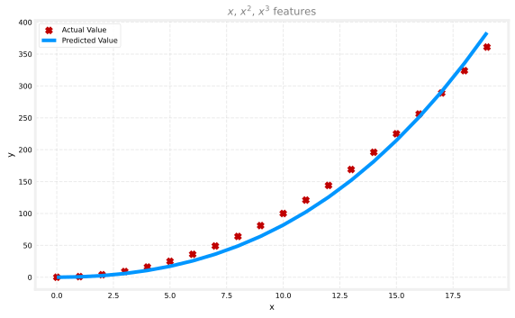
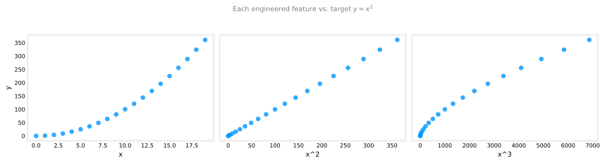
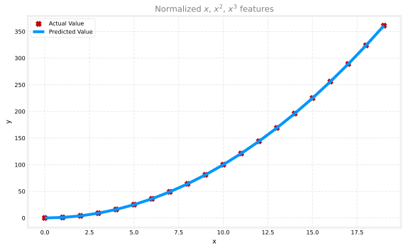
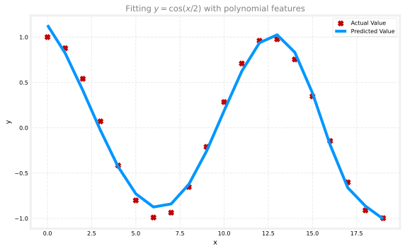
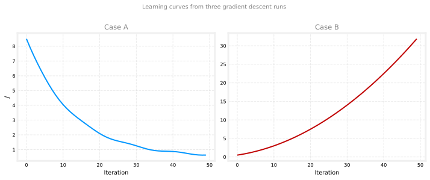

Feature Engineering and Polynomial Regression
machine-learning
supervised-learning
regression
The features you feed into a learning algorithm can have a huge impact on performance. For many real applications, choosing or engineering the right…
The features you feed into a learning algorithm can have a huge impact on performance. For many real applications, choosing or engineering the right features is a critical step toward a model that works well.
This page covers two related ideas from multiple linear regression:
- Feature engineering: use domain knowledge to build new features from the ones you already have.
- Polynomial regression: engineer powers of a feature so a linear model can fit curves, not only straight lines.
Both techniques keep the same cost function and gradient descent machinery you have already learned. You change the input features, not the learning algorithm itself.
Review Questions
1. What is the main lever you control when feature engineering, without changing the learning algorithm?
TipAnswer
The input features you give the model. You transform or combine original features so the same linear model can represent richer relationships.
Feature Engineering
Revisit predicting house price. Suppose each house has two measurements of the lot:
- \(x_1\): frontage (width of the lot along the street)
- \(x_2\): depth (how far the lot extends back from the street)
Assume the lot is roughly rectangular. A natural first model is multiple linear regression:
\[ f_{\vec{w},b}(\vec{x}) = w_1 x_1 + w_2 x_2 + b \]
That model might work reasonably well. But you may notice that lot area is often more predictive than width and depth separately. Area is frontage times depth:
\[ x_3 = x_1 \cdot x_2 \]
Now you can include \(x_3\) as a third feature:
\[ f_{\vec{w},b}(\vec{x}) = w_1 x_1 + w_2 x_2 + w_3 x_3 + b \]
Gradient descent can learn weights \(w_1\), \(w_2\), and \(w_3\). The data will show whether frontage, depth, or area matters most for price.
Feature engineering means using knowledge about the problem to design new features, usually by transforming or combining the originals, so the learning algorithm can make more accurate predictions. Rather than accepting only the features you started with, a well-chosen engineered feature can yield a much better model.
Review Questions
1. In the frontage and depth example, what does the engineered feature \(x_3\) represent?
TipAnswer
The area of the rectangular lot: \(x_3 = x_1 \times x_2\).
1. Does feature engineering change the gradient descent update rules?
TipAnswer
No. You still minimize the same squared-error cost and apply the same updates to \(\vec{w}\) and \(b\). Only the feature vector \(\vec{x}\) changes.
Polynomial Regression
So far, many of our plots fit a straight line to the data. Combining multiple linear regression with feature engineering gives polynomial regression, which lets you fit curves (non-linear shapes) while still using a linear model in the parameters.
Consider a housing data set where the single input \(x\) is house size in square feet. A straight line may not track the scatter very well. You might add a squared term and fit:
\[ f_{\vec{w},b}(\vec{x}) = w_1 x + w_2 x^2 + b \]
where the feature vector is \(\vec{x} = [x,\; x^2]\).
A quadratic curve can bend, but it eventually turns around and comes back down at large \(x\). For housing prices, that is often unrealistic: we usually expect larger homes to cost more, not less.
A cubic model adds \(x^3\):
\[ f_{\vec{w},b}(\vec{x}) = w_1 x + w_2 x^2 + w_3 x^3 + b \]
The extra flexibility can track upward trends at large sizes better than a pure quadratic, though it is still only a rough approximation of real markets.
Polynomial regression means taking one or more original features and adding their powers (\(x^2\), \(x^3\), and so on) as new features. The model stays linear in the weights, but the prediction curve can bend.
The plot below uses the 47-house training set (size in sqft, price in thousands of dollars). The blue scatter is the data. Three curves show a degree-1 (linear), degree-2 (quadratic), and degree-3 (cubic) fit. The dashed extension of the quadratic illustrates why a parabola can be a poor choice for extrapolation: beyond the training range it may predict falling prices as size grows.
Review Questions
1. Why might a quadratic model be a poor choice for predicting house prices at very large sizes?
TipAnswer
A quadratic eventually curves downward. That can fit some training points, but it may predict lower prices for huge houses, which is often unrealistic.
1. In polynomial regression, is the model still “linear”?
TipAnswer
Yes, it is still linear in the parameters \(w_1, w_2, \ldots\) (and \(b\)). The non-linearity appears in how features like \(x^2\) and \(x^3\) enter the input vector, not in the weights.
Feature Scaling With Polynomial Features
When you add powers of a feature, feature scaling becomes even more important.
Suppose size \(x\) ranges from 1 to 1,000 sqft (the lecture uses a compact range to make the arithmetic easy). Then:
| Feature | Minimum | Maximum |
|---|---|---|
| \(x\) | 1 | 1,000 |
| \(x^2\) | 1 | \(10^6\) |
| \(x^3\) | 1 | \(10^9\) |
The second and third features span vastly different ranges than \(x\). If you run gradient descent without scaling, one learning rate may take huge steps on \(x^3\) and tiny steps on \(x\), which slows convergence or causes instability (as you saw in the convergence lab).

Apply z-score (or another) scaling to every engineered feature, including powers, before gradient descent.
Review Questions
1. If \(x\) ranges from 1 to 1,000, what is the maximum value of \(x^3\)?
TipAnswer
\(1{,}000^3 = 10^9\) (one billion).
1. Why does adding \(x^2\) and \(x^3\) make feature scaling more urgent?
TipAnswer
Powers stretch features onto vastly different numeric scales. Gradient descent then struggles to pick one learning rate that works for all weights unless you rescale the features.
Square Root Features
You are not limited to integer powers. Another reasonable choice is the square root of size:
\[ f_{w,b}(x) = w_1 x + w_2 \sqrt{x} + b \]
The square root grows more slowly than \(x\). The curve becomes less steep as \(x\) increases, but it does not turn around and fall like a quadratic can.

Whether \(x\), \(x^2\), \(x^3\), \(\sqrt{x}\), or an engineered product like \(x_1 x_2\) is best depends on the data and the application. Later in the specialization you will see systematic ways to compare models. For now, the key takeaway is that you have a choice in what features to include.
Review Questions
1. How does \(\sqrt{x}\) behave differently from \(x^2\) at large values of \(x\)?
TipAnswer
\(\sqrt{x}\) keeps increasing but flattens (grows more slowly). \(x^2\) accelerates upward and, in a model with a negative weight, can eventually pull predictions back down.
Lab 1: Feature Engineering and Polynomial Regression
Sometimes a straight line is not enough. In this lab, you will build new features (like \(x^2\)) so linear regression can fit curved patterns while still using the same gradient descent machinery you already know.
Goals
In this lab, you will:
- explore feature engineering and polynomial regression, which let you use linear regression machinery to fit very complicated, even very non-linear functions
Tools
You will use NumPy, Matplotlib, and the gradient descent helpers below.
import copy
import math
import numpy as np
import matplotlib.pyplot as plt
plt.style.use("../../deeplearning.mplstyle")
np.set_printoptions(precision=2)def compute_cost(X, y, w, b):
m = X.shape[0]
cost = 0.0
for i in range(m):
f_wb_i = np.dot(X[i], w) + b
cost = cost + (f_wb_i - y[i]) ** 2
cost = cost / (2 * m)
return np.squeeze(cost)
def compute_gradient_matrix(X, y, w, b):
m, n = X.shape
f_wb = X @ w + b
e = f_wb - y
dj_dw = (1 / m) * (X.T @ e)
dj_db = (1 / m) * np.sum(e)
return dj_db, dj_dw
def gradient_descent(X, y, w_in, b_in, cost_function, gradient_function, alpha, num_iters):
w = copy.deepcopy(w_in)
b = b_in
for i in range(num_iters):
dj_db, dj_dw = gradient_function(X, y, w, b)
w = w - alpha * dj_dw
b = b - alpha * dj_db
if i % math.ceil(num_iters / 10) == 0:
cst = cost_function(X, y, w, b)
print(f"Iteration {i:9d}, Cost: {cst:0.5e}")
return w, b
def run_gradient_descent_feng(X, y, iterations=1000, alpha=1e-6):
m, n = X.shape
initial_w = np.zeros(n)
initial_b = 0
w_out, b_out = gradient_descent(
X, y, initial_w, initial_b, compute_cost, compute_gradient_matrix, alpha, iterations
)
print(f"w,b found by gradient descent: w: {w_out}, b: {b_out:0.4f}")
return w_out, b_out
def zscore_normalize_features(X):
mu = np.mean(X, axis=0)
sigma = np.std(X, axis=0)
return (X - mu) / sigmaFeature Engineering and Polynomial Regression Overview
Out of the box, multiple linear regression builds models of the form:
\[ f_{\vec{w},b}(\vec{x}) = w_0 x_0 + w_1 x_1 + \cdots + w_{n-1} x_{n-1} + b \]
What if your features are non-linear, or are combinations of features? Housing prices do not tend to be linear with living area. Very small or very large houses are often penalized, producing the curved pattern from the lecture.
You still have the same machinery: adjust \(\vec{w}\) and \(b\) to fit the training data. But no amount of tuning \(\vec{w}\) and \(b\) on only the raw feature \(x\) will fit a curved relationship. You need to engineer new features.
Polynomial Features
Start with a simple quadratic target: \(y = 1 + x^2\) on \(x = 0, 1, \ldots, 19\).
Without Feature Engineering
If you pass \(x\) itself as the only feature, linear regression cannot bend. The fit is poor.
x = np.arange(0, 20, 1)
y = 1 + x ** 2
X = x.reshape(-1, 1)model_w, model_b = run_gradient_descent_feng(X, y, iterations=1000, alpha=1e-2)Iteration 0, Cost: 1.65756e+03
Iteration 100, Cost: 6.94549e+02
Iteration 200, Cost: 5.88475e+02
Iteration 300, Cost: 5.26414e+02
Iteration 400, Cost: 4.90103e+02
Iteration 500, Cost: 4.68858e+02
Iteration 600, Cost: 4.56428e+02
Iteration 700, Cost: 4.49155e+02
Iteration 800, Cost: 4.44900e+02
Iteration 900, Cost: 4.42411e+02
w,b found by gradient descent: w: [18.7], b: -52.0834
As expected, not a great fit.
With an \(x^2\) Feature
What we need is something like \(y = w_0 x_0^2 + b\). Engineer the feature by replacing \(x\) with \(x^2\):
x = np.arange(0, 20, 1)
y = 1 + x ** 2
X = x ** 2
X = X.reshape(-1, 1)model_w, model_b = run_gradient_descent_feng(X, y, iterations=10000, alpha=1e-5)Iteration 0, Cost: 7.32922e+03
Iteration 1000, Cost: 2.24844e-01
Iteration 2000, Cost: 2.22795e-01
Iteration 3000, Cost: 2.20764e-01
Iteration 4000, Cost: 2.18752e-01
Iteration 5000, Cost: 2.16758e-01
Iteration 6000, Cost: 2.14782e-01
Iteration 7000, Cost: 2.12824e-01
Iteration 8000, Cost: 2.10884e-01
Iteration 9000, Cost: 2.08962e-01
w,b found by gradient descent: w: [1.], b: 0.0490Near-perfect fit. The printed weights are close to \(w = [1]\) and \(b \approx 1\), matching \(y = 1 + x^2\). With more iterations the match would be even tighter.
Review Questions
1. Why does the first model fail when \(y = 1 + x^2\) but the second succeeds?
TipAnswer
Linear regression in \(x\) can only fit a straight line. Engineering \(x^2\) as the input feature turns the problem into \(y \approx w_0 x^2 + b\), which matches the quadratic target.
Selecting Features
You may not always know which power is required. You can add several candidate features and let gradient descent emphasize the useful ones.
Target \(y = x^2\) again, but now supply \(x\), \(x^2\), and \(x^3\) using np.c_ to stack columns:
x = np.arange(0, 20, 1)
y = x ** 2
X = np.c_[x, x ** 2, x ** 3]model_w, model_b = run_gradient_descent_feng(X, y, iterations=10000, alpha=1e-7)Iteration 0, Cost: 1.14029e+03
Iteration 1000, Cost: 3.28539e+02
Iteration 2000, Cost: 2.80443e+02
Iteration 3000, Cost: 2.39389e+02
Iteration 4000, Cost: 2.04344e+02
Iteration 5000, Cost: 1.74430e+02
Iteration 6000, Cost: 1.48896e+02
Iteration 7000, Cost: 1.27100e+02
Iteration 8000, Cost: 1.08495e+02
Iteration 9000, Cost: 9.26132e+01
w,b found by gradient descent: w: [0.08 0.54 0.03], b: 0.0106
The fitted weights are approximately \([0.08,\; 0.54,\; 0.03]\) with \(b \approx 0.01\). The model is:
\[ 0.08 x + 0.54 x^2 + 0.03 x^3 + 0.01 \]
Gradient descent emphasized the \(x^2\) term because it is the most useful for fitting \(y = x^2\). With a very long run, the weights on \(x\) and \(x^3\) would shrink further.
Takeaway: a smaller weight means a less important feature. When a weight is near zero, that feature contributes little to the fit. Here, \(w_1\) (on \(x^2\)) is much larger than \(w_0\) or \(w_2\).
Review Questions
1. When fitting \(y = x^2\) with features \(x\), \(x^2\), and \(x^3\), which weight should be largest in a good solution?
TipAnswer
The weight on \(x^2\) (\(w_1\)), because the target is exactly quadratic in \(x\).
Alternate View
Another way to think about feature choice: after engineering, you are still doing linear regression. The best feature is the one that looks linear against the target \(y\).
x = np.arange(0, 20, 1)
y = x ** 2
X = np.c_[x, x ** 2, x ** 3]
X_features = ["x", "x^2", "x^3"]
The middle panel (\(x^2\) vs. \(y\)) is nearly a straight line. Linear regression can easily fit a model using that feature.
Review Questions
1. In the three-panel plot, which feature looks most linear relative to \(y = x^2\)?
TipAnswer
\(x^2\). The scatter in the middle panel follows an almost straight upward trend.
Scaling Features
As in the feature scaling and convergence labs, features on very different scales slow or destabilize gradient descent. Here \(x\), \(x^2\), and \(x^3\) naturally span different ranges.
x = np.arange(0, 20, 1)
X = np.c_[x, x ** 2, x ** 3]
print(f"Peak-to-peak range by column in raw X: {np.ptp(X, axis=0)}")
X_norm = zscore_normalize_features(X)
print(f"Peak-to-peak range by column in normalized X: {np.ptp(X_norm, axis=0)}")Peak-to-peak range by column in raw X: [ 19 361 6859]
Peak-to-peak range by column in normalized X: [3.3 3.18 3.28]After z-score normalization, the columns are comparable. You can use a much larger learning rate:
x = np.arange(0, 20, 1)
y = x ** 2
X = np.c_[x, x ** 2, x ** 3]
X = zscore_normalize_features(X)model_w, model_b = run_gradient_descent_feng(X, y, iterations=100000, alpha=1e-1)Iteration 0, Cost: 9.42147e+03
Iteration 10000, Cost: 3.90938e-01
Iteration 20000, Cost: 2.78389e-02
Iteration 30000, Cost: 1.98242e-03
Iteration 40000, Cost: 1.41169e-04
Iteration 50000, Cost: 1.00527e-05
Iteration 60000, Cost: 7.15855e-07
Iteration 70000, Cost: 5.09763e-08
Iteration 80000, Cost: 3.63004e-09
Iteration 90000, Cost: 2.58497e-10
w,b found by gradient descent: w: [5.27e-05 1.13e+02 8.43e-05], b: 123.5000
Feature scaling lets this converge much faster. The weight on \(x^2\) dominates again; gradient descent has nearly eliminated the \(x^3\) term.
Review Questions
1. Why can \(\alpha = 0.1\) work here after z-score normalization but not on raw \(x\), \(x^2\), \(x^3\) columns?
TipAnswer
Normalization puts every column on a similar scale. One learning rate can then take reasonable steps on all weights. Raw \(x^3\) values are much larger than \(x\), which would require a tiny \(\alpha\) without scaling.
Complex Functions
With enough engineered powers and feature scaling, you can approximate quite complex functions. Try \(y = \cos(x/2)\) using powers through \(x^{13}\):
x = np.arange(0, 20, 1)
y = np.cos(x / 2)
X = np.c_[x, x ** 2, x ** 3, x ** 4, x ** 5, x ** 6, x ** 7, x ** 8, x ** 9, x ** 10, x ** 11, x ** 12, x ** 13]
X = zscore_normalize_features(X)model_w, model_b = run_gradient_descent_feng(X, y, iterations=1000000, alpha=1e-1)Iteration 0, Cost: 2.20188e-01
Iteration 100000, Cost: 1.70074e-02
Iteration 200000, Cost: 1.27603e-02
Iteration 300000, Cost: 9.73032e-03
Iteration 400000, Cost: 7.56440e-03
Iteration 500000, Cost: 6.01412e-03
Iteration 600000, Cost: 4.90251e-03
Iteration 700000, Cost: 4.10351e-03
Iteration 800000, Cost: 3.52730e-03
Iteration 900000, Cost: 3.10989e-03
w,b found by gradient descent: w: [ -1.34 -10. 24.78 5.96 -12.49 -16.26 -9.51 0.59 8.7 11.94
9.27 0.79 -12.82], b: -0.0073
The prediction curve tracks the cosine shape over the training range. This is still linear regression after feature engineering: the “polynomial” part lives in the features, not in a different learning algorithm.
Lab Summary
In this lab you:
- saw that raw \(x\) cannot fit \(y = 1 + x^2\), but an engineered \(x^2\) feature can
- added multiple candidate powers and watched gradient descent emphasize \(x^2\) for a quadratic target
- plotted each feature against \(y\) to see which one is linearly related to the target
- applied z-score normalization so gradient descent could use a larger \(\alpha\)
- approximated \(y = \cos(x/2)\) with a high-degree polynomial feature vector
Review Questions
1. In this lab, what does np.c_[x, x**2, x**3] do?
TipAnswer
It stacks \(x\), \(x^2\), and \(x^3\) as columns of a design matrix so each row is one training example with three engineered features.
1. After z-score normalizing \(x\), \(x^2\), and \(x^3\), why does the weight on \(x^3\) shrink compared to the unscaled run?
TipAnswer
Scaling lets gradient descent converge reliably with a larger \(\alpha\). The algorithm can then focus weight on \(x^2\), which is the feature that actually matches \(y = x^2\), instead of fighting unstable steps on oversized \(x^3\) values.
1. Which of the following is a valid step used during feature scaling?
Add the mean (average) to each value and then divide by \((\max - \min)\).
Subtract the mean (average) from each value and then divide by \((\max - \min)\).
TipAnswer
b. This is mean normalization: subtract the feature mean \(\mu_j\), then divide by the peak-to-peak range \(\max(x_j) - \min(x_j)\). Adding the mean would shift values in the wrong direction.
1. Suppose a friend ran gradient descent three separate times with three choices of the learning rate \(\alpha\) and plotted the learning curves for each (cost \(J\) for each iteration). For which case, A or B, was the learning rate \(\alpha\) likely too large?

Case A only
Neither Case A nor B
Case B only
Both Cases A and B
TipAnswer
c. Case B only. In Case B, \(J\) increases as iterations continue, which is the classic sign that \(\alpha\) is too large (or there is a bug). Case A shows \(J\) trending downward, which is what you want. See checking convergence for more learning-curve diagnostics.
1. Of the circumstances below, for which one is feature scaling particularly helpful?
Feature scaling is helpful when one feature is much larger (or smaller) than another feature.
Feature scaling is helpful when all the features in the original data (before scaling is applied) range from 0 to 1.
TipAnswer
a. Feature scaling matters most when features live on very different numeric scales (for example, house size in thousands of sqft vs. bedroom count from 0 to 5). If every feature already spans a similar small range like 0 to 1, scaling is usually less urgent.
1. You are helping a grocery store predict its revenue, and have data on its items sold per week and price per item. What could be a useful engineered feature?
For each product, calculate the number of items sold times price per item.
For each product, calculate the number of items sold divided by the price per item.
TipAnswer
a. Revenue is naturally items sold \(\times\) price per item, the same idea as lot area \(= \text{frontage} \times \text{depth}\) in feature engineering. Dividing sold count by price does not match a standard revenue formula.
1. True or false? With polynomial regression, the predicted values \(f_{\vec{w},b}(x)\) do not necessarily have to be a straight line (or linear) function of the input feature \(x\).
True
False
TipAnswer
a. True. The model is still linear in the parameters \(\vec{w}\), but engineered features like \(x^2\) and \(x^3\) let the prediction curve bend as a function of the original input \(x\).
What Comes Next
Congratulations on finishing the regression portion of Week 1. You have seen the full path from a linear model through gradient descent, feature scaling, and now feature engineering and polynomial regression.
Next week moves beyond predicting numbers to classification, where the target is a category (such as spam or not spam) rather than a dollar amount.